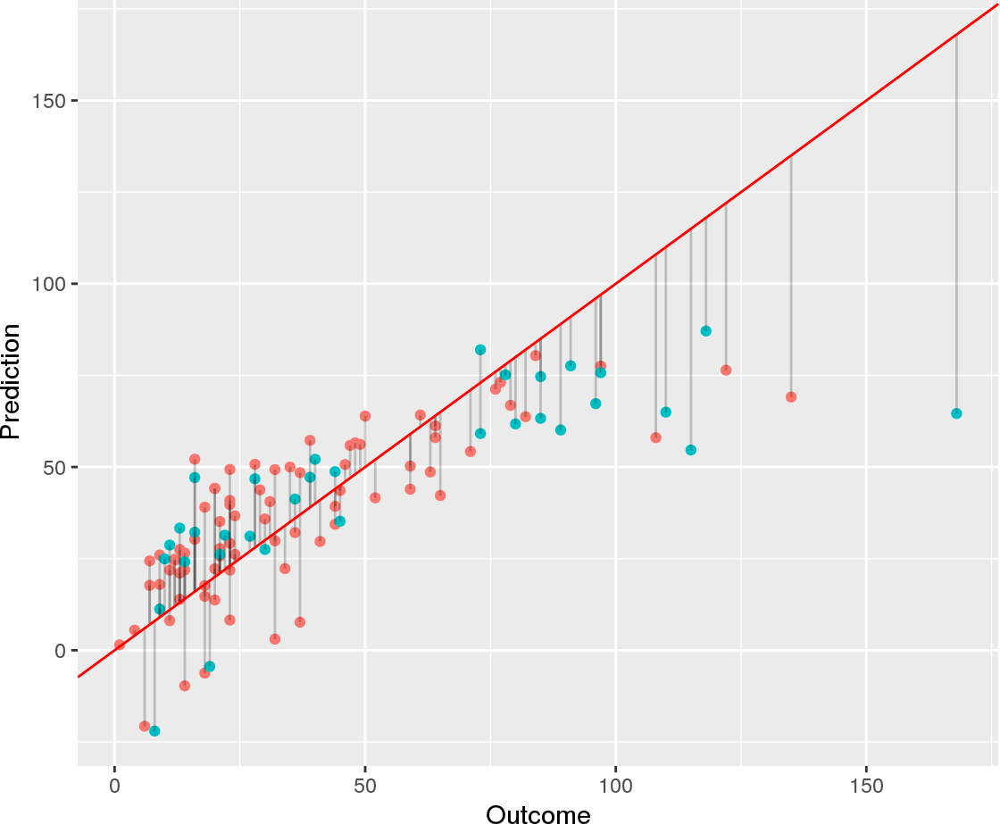

Linear prediction models assume that there is a linear relationship between the independent variables and the dependent variable. Therefore, these models exhibit high bias and low variance.
The high bias of these models is due to the assumption of nonlinearity. If this assumption does not sufficiently represent the data, then linear models will be inaccurate.
On the other hand, linear models also have a low variance. This means that if several linear models would be trained using different data, they would perform similarly on the same test data set. This is because linear models are inflexible because there are few parameters to be tuned.
Thus, linear models are interpretable and robust. However, if their assumptions are not met, they willl perform poorly.
Linear models excel under the following circumstances:
The following linear models are frequently used:
The following posts deal with linear models for prediction.